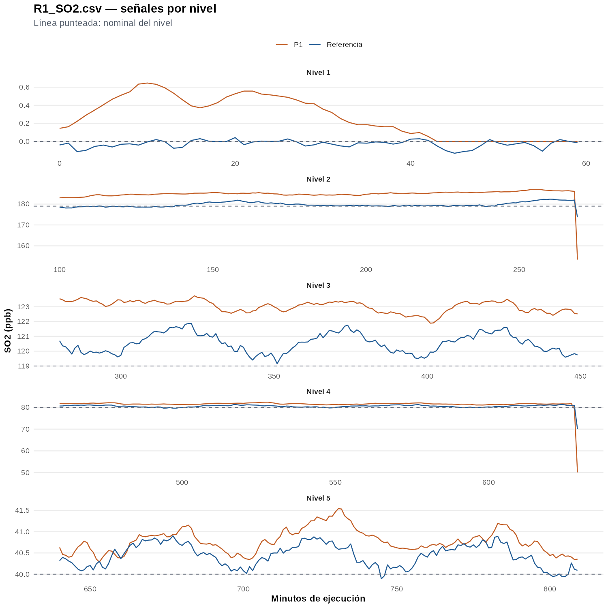
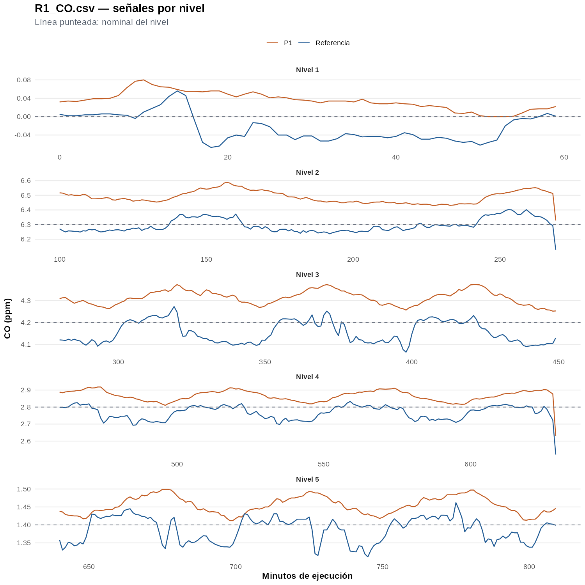
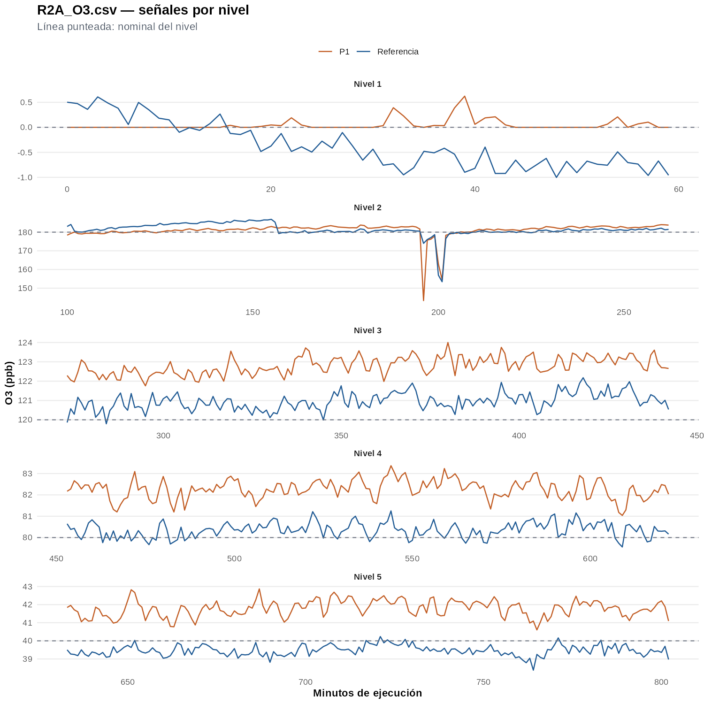
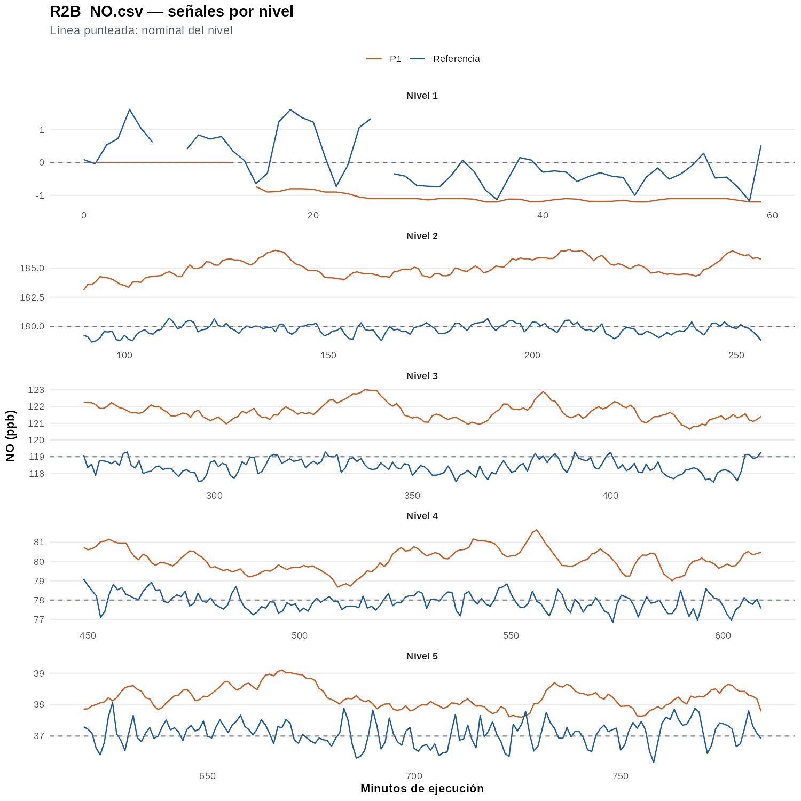
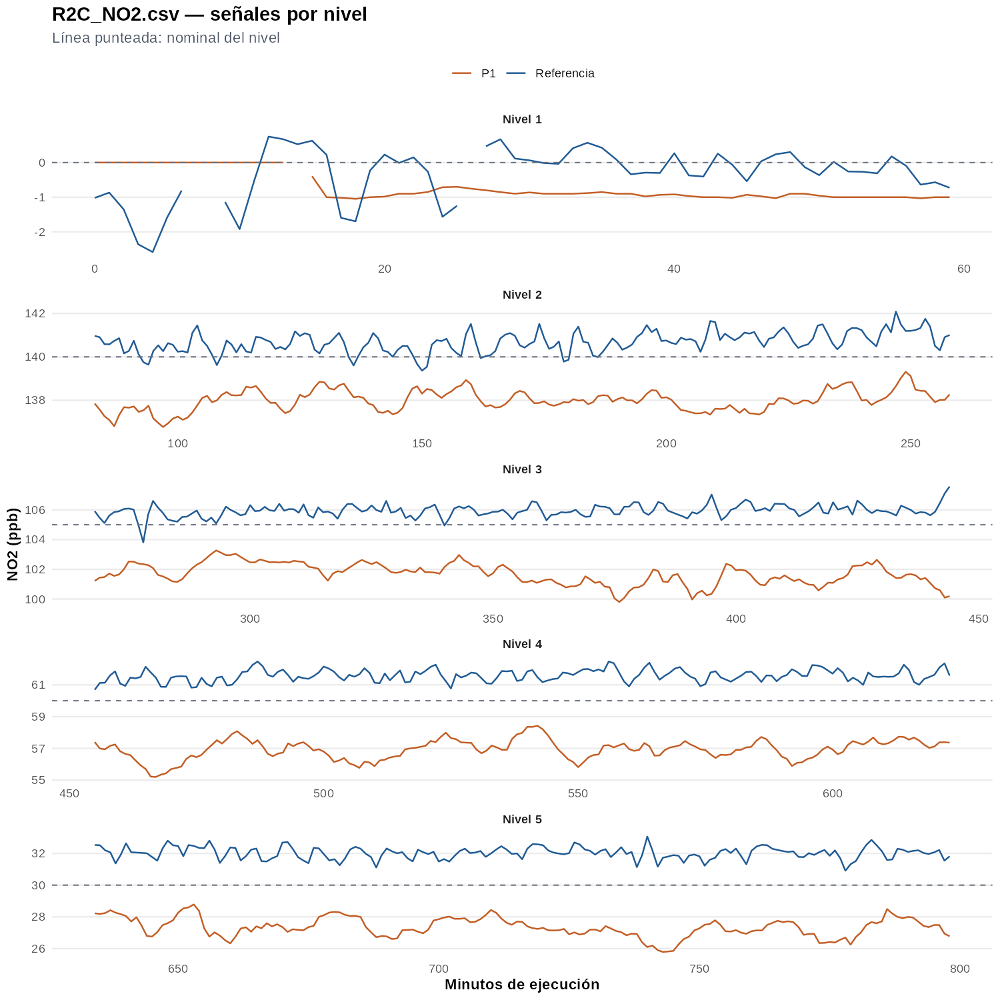
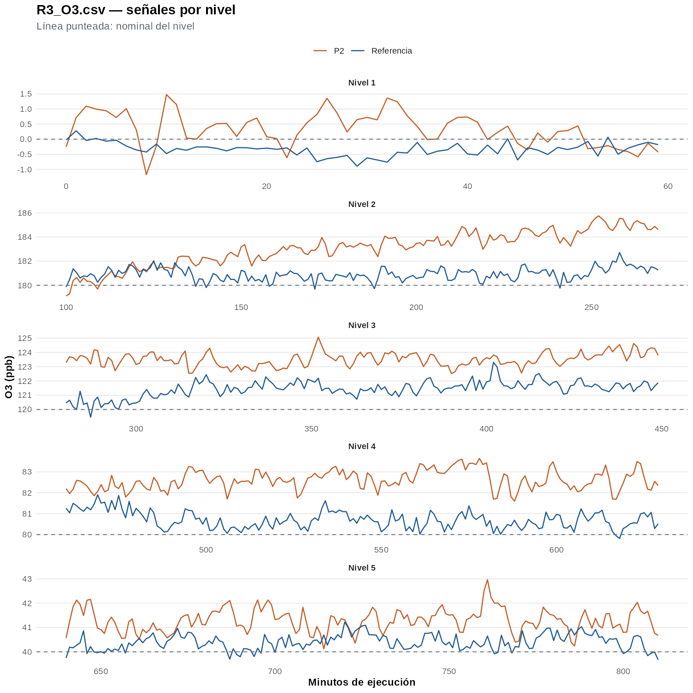
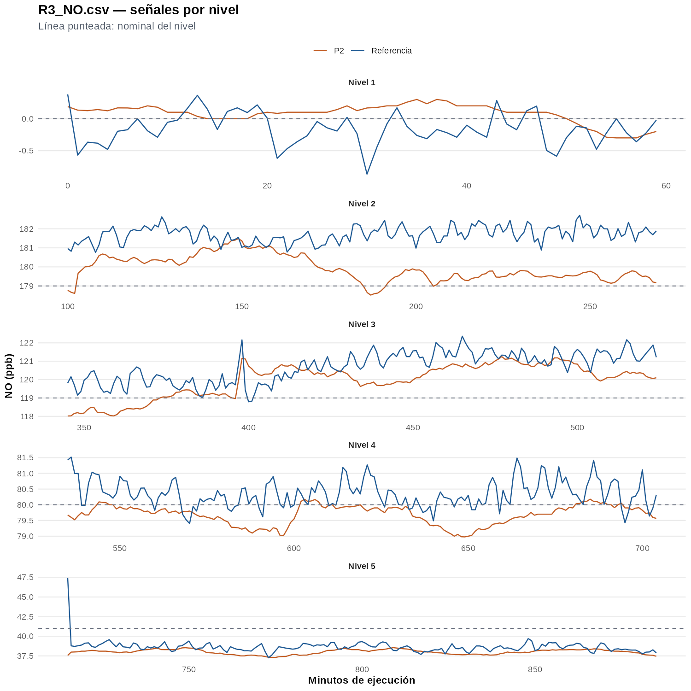
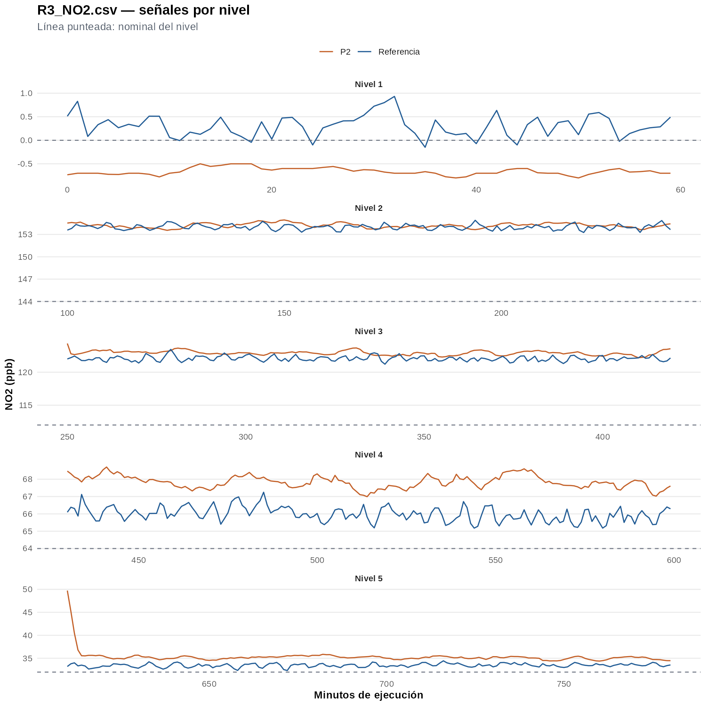
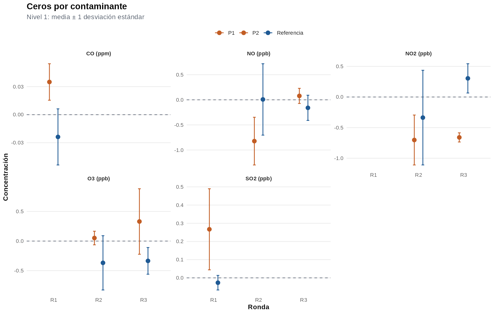
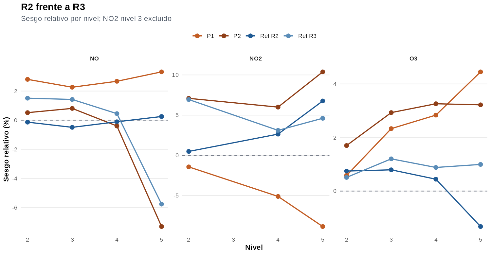

Resultados preliminares — Rondas PT
Informe directo de señales y resúmenes por nivel. Cálculos usan filas etiquetadas como niveles 1–5; transiciones estab quedan fuera. Valores no numéricos se tratan como ausentes. Resultados son descriptivos y no incluyen todavía filtrado Hampel ni inferencia formal.
Resultados destacados
Mayores sesgos relativos observados en niveles distintos de cero:
- R3_NO2.csv, nivel 5, P2: media 35.32 ppb; sesgo 10.38%.
- R3_NO2.csv, nivel 3, P2: media 122.92 ppb; sesgo 9.75%.
- R3_NO2.csv, nivel 3, Referencia: media 122.07 ppb; sesgo 8.99%.
- R2C_NO2.csv, nivel 5, P1: media 27.34 ppb; sesgo -8.85%.
- R3_NO.csv, nivel 5, P2: media 38.00 ppb; sesgo -7.31%.
- R3_NO2.csv, nivel 2, P2: media 154.21 ppb; sesgo 7.09%.
Señales por archivo y nivel
R1_SO2.csv
SO2 en ppb. Referencia y P1 por nivel.

R1_CO.csv
CO en ppm. Referencia y P1 por nivel.

R2A_O3.csv
O3 en ppb. Referencia y P1 por nivel.

R2B_NO.csv
NO en ppb. Referencia y P1 por nivel.

R2C_NO2.csv
NO2 en ppb. Referencia y P1 por nivel.

R3_O3.csv
O3 en ppb. Referencia y P2 por nivel.

R3_NO.csv
NO en ppb. Referencia y P2 por nivel.

R3_NO2.csv
NO2 en ppb. Referencia y P2 por nivel.

Ceros por contaminante

- R1_CO.csv — P1: 0.035 ± 0.020 ppm.
- R1_CO.csv — Referencia: -0.024 ± 0.030 ppm.
- R1_SO2.csv — P1: 0.267 ± 0.223 ppb.
- R1_SO2.csv — Referencia: -0.027 ± 0.040 ppb.
- R2A_O3.csv — P1: 0.051 ± 0.115 ppb.
- R2A_O3.csv — Referencia: -0.368 ± 0.458 ppb.
- R2B_NO.csv — P1: -0.823 ± 0.475 ppb.
- R2B_NO.csv — Referencia: 0.008 ± 0.711 ppb.
- R2C_NO2.csv — P1: -0.702 ± 0.408 ppb.
- R2C_NO2.csv — Referencia: -0.337 ± 0.773 ppb.
- R3_NO.csv — P2: 0.078 ± 0.151 ppb.
- R3_NO.csv — Referencia: -0.159 ± 0.251 ppb.
- R3_NO2.csv — P2: -0.660 ± 0.075 ppb.
- R3_NO2.csv — Referencia: 0.304 ± 0.239 ppb.
- R3_O3.csv — P2: 0.331 ± 0.553 ppb.
- R3_O3.csv — Referencia: -0.335 ± 0.225 ppb.
Cada panel usa escala propia: CO en ppm y demás contaminantes en ppb. Ceros de R3_NO y R3_NO2 comparten el mismo período inicial y no deben sumarse como evidencia independiente.
Comparación R2–R3

O3 usa nominales idénticos. Diferencias nominales de NO se aceptan. En NO2 se excluye nivel 3 de esta comparación; nivel 2 de R3 conserva nominal declarado de 144 ppb sin corrección.
Resumen completo por nivel
| Archivo | Nivel | Nominal | Referencia | Participante | Ref - participante | Sesgo ref (%) | Sesgo part (%) |
|---|---|---|---|---|---|---|---|
| R1_SO2.csv | 1 | 0.00 ppb | -0.03 | 0.27 | -0.29 | — | — |
| R1_SO2.csv | 2 | 179.00 ppb | 179.72 | 184.87 | -5.15 | 0.40 | 3.28 |
| R1_SO2.csv | 3 | 119.00 ppb | 120.53 | 123.02 | -2.49 | 1.29 | 3.38 |
| R1_SO2.csv | 4 | 80.00 ppb | 80.51 | 81.43 | -0.92 | 0.64 | 1.79 |
| R1_SO2.csv | 5 | 40.00 ppb | 40.44 | 40.78 | -0.34 | 1.10 | 1.94 |
| R1_CO.csv | 1 | 0.00 ppm | -0.02 | 0.03 | -0.06 | — | — |
| R1_CO.csv | 2 | 6.30 ppm | 6.29 | 6.49 | -0.19 | -0.08 | 2.97 |
| R1_CO.csv | 3 | 4.20 ppm | 4.16 | 4.31 | -0.16 | -1.06 | 2.70 |
| R1_CO.csv | 4 | 2.80 ppm | 2.77 | 2.87 | -0.10 | -1.19 | 2.36 |
| R1_CO.csv | 5 | 1.40 ppm | 1.39 | 1.45 | -0.07 | -0.94 | 3.90 |
| R2A_O3.csv | 1 | 0.00 ppb | -0.37 | 0.05 | -0.42 | — | — |
| R2A_O3.csv | 2 | 180.00 ppb | 181.34 | 181.05 | 0.30 | 0.75 | 0.58 |
| R2A_O3.csv | 3 | 120.00 ppb | 120.95 | 122.80 | -1.85 | 0.79 | 2.33 |
| R2A_O3.csv | 4 | 80.00 ppb | 80.35 | 82.27 | -1.91 | 0.44 | 2.84 |
| R2A_O3.csv | 5 | 40.00 ppb | 39.47 | 41.78 | -2.31 | -1.32 | 4.45 |
| R2B_NO.csv | 1 | 0.00 ppb | 0.01 | -0.82 | 0.83 | — | — |
| R2B_NO.csv | 2 | 180.00 ppb | 179.75 | 185.05 | -5.29 | -0.14 | 2.80 |
| R2B_NO.csv | 3 | 119.00 ppb | 118.41 | 121.69 | -3.28 | -0.49 | 2.26 |
| R2B_NO.csv | 4 | 78.00 ppb | 77.91 | 80.08 | -2.17 | -0.11 | 2.67 |
| R2B_NO.csv | 5 | 37.00 ppb | 37.09 | 38.23 | -1.13 | 0.25 | 3.32 |
| R2C_NO2.csv | 1 | 0.00 ppb | -0.34 | -0.70 | 0.37 | — | — |
| R2C_NO2.csv | 2 | 140.00 ppb | 140.68 | 137.99 | 2.69 | 0.49 | -1.43 |
| R2C_NO2.csv | 3 | 105.00 ppb | 105.93 | 101.69 | 4.24 | 0.89 | -3.16 |
| R2C_NO2.csv | 4 | 60.00 ppb | 61.58 | 56.94 | 4.65 | 2.64 | -5.11 |
| R2C_NO2.csv | 5 | 30.00 ppb | 32.03 | 27.34 | 4.68 | 6.76 | -8.85 |
| R3_O3.csv | 1 | 0.00 ppb | -0.33 | 0.33 | -0.67 | — | — |
| R3_O3.csv | 2 | 180.00 ppb | 180.92 | 183.06 | -2.14 | 0.51 | 1.70 |
| R3_O3.csv | 3 | 120.00 ppb | 121.44 | 123.52 | -2.07 | 1.20 | 2.93 |
| R3_O3.csv | 4 | 80.00 ppb | 80.71 | 82.61 | -1.90 | 0.88 | 3.26 |
| R3_O3.csv | 5 | 40.00 ppb | 40.40 | 41.29 | -0.89 | 0.99 | 3.22 |
| R3_NO.csv | 1 | 0.00 ppb | -0.16 | 0.08 | -0.24 | — | — |
| R3_NO.csv | 2 | 179.00 ppb | 181.70 | 179.93 | 1.78 | 1.51 | 0.52 |
| R3_NO.csv | 3 | 119.00 ppb | 120.69 | 119.96 | 0.73 | 1.42 | 0.81 |
| R3_NO.csv | 4 | 80.00 ppb | 80.36 | 79.68 | 0.68 | 0.45 | -0.40 |
| R3_NO.csv | 5 | 41.00 ppb | 38.64 | 38.00 | 0.63 | -5.77 | -7.31 |
| R3_NO2.csv | 1 | 0.00 ppb | 0.30 | -0.66 | 0.96 | — | — |
| R3_NO2.csv | 2 | 144.00 ppb | 153.99 | 154.21 | -0.21 | 6.94 | 7.09 |
| R3_NO2.csv | 3 | 112.00 ppb | 122.07 | 122.92 | -0.85 | 8.99 | 9.75 |
| R3_NO2.csv | 4 | 64.00 ppb | 65.99 | 67.84 | -1.85 | 3.11 | 6.00 |
| R3_NO2.csv | 5 | 32.00 ppb | 33.47 | 35.32 | -1.85 | 4.61 | 10.38 |
Lectura final
- Gráficas muestran referencia y participante sobre misma escala dentro de cada archivo.
- Comparación entre P1 y P2 es descriptiva: participantes, fechas y mezclas cambian entre R2 y R3.
- Sesgos se presentan sin corrección.
- Interrupciones temporales y excursiones visibles requieren revisión antes de conclusiones metrológicas definitivas.